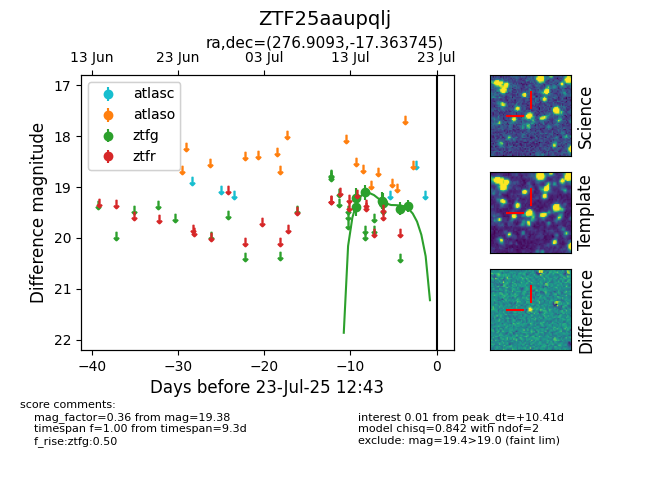

Target ZTF25aaupqlj at 2025-07-23 11:52, see:
FINK: fink-portal.org/ZTF25aaupqlj
Lasair: lasair-ztf.lsst.ac.uk/objects/ZTF25aaupqlj
ALeRCE: alerce.online/object/ZTF25aaupqlj
alt names
ZTF25aaupqlj (ztf,fink)
coordinates:
equatorial (ra, dec) = (276.9093,-17.36375)
galactic (l, b) = (14.8077,-2.75283)
photometry
last ztfg=19.38
7 ztfg detections
